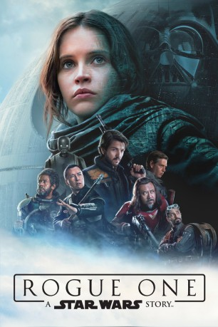

Alternativ: Rogue One
Auszeichnungen: für 2 Oscars nominiert gesehen am 07.04.2017
gesehen am 07.04.2017
 
 IMDB-Wertung: 8.0 / 10
IMDB-Wertung: 8.0 / 10  Metascore:
Metascore: 
Schwere Körperverletzung, Besitz gestohlener Güter, Fälschung imperialer Dokumente – Jyn Erso (Felicity Jones) hat eine Reihe Schandtaten in ihrem Lebenslauf, als sie von den Rebellen angeheuert wird. Andererseits: Der Kampf gegen das Imperium wird nicht mit Samthandschuhen gewonnen, das wissen die Widerstandskämpfer um Mon Mothma (Genevieve O'Reilly). Und außerdem war Jyns Vater Galen Erso (Mads Mikkelsen) maßgeblich daran beteiligt, die neue Superwaffe des Imperiums zu bauen, weswegen sein Insiderwissen und Jyns Verbindung zu ihm wertvoll sind.
Jahr: 2016
Dauer: 133 Minuten
FSK: 12
Land: USA Studio: Walt Disney Studios Motion PicturesTonspuren: DTS - ,
Untertitel: Deutsch,
Auflösung: 1080p (1920x808) Größe: 6461 MB
Genre: Action, Sci-Fi, Abenteuer
Regisseur: Gareth Edwards
Drehbuch: Danièle Thompson
Soundtrack:
Darsteller:
Datei: X:\7+mehr(A-Z)\Star Wars\Star Wars Rogue One (2016, FSK12, 1920x808) 3D.mkv seit 04.04.2017
Festplatte: HD Collection-7+mehr(A-Z)+Person
 Es gibt insgesamt 18 Filme in der Gruppe '7+mehr(A-Z)\Star Wars'
Es gibt insgesamt 18 Filme in der Gruppe '7+mehr(A-Z)\Star Wars'